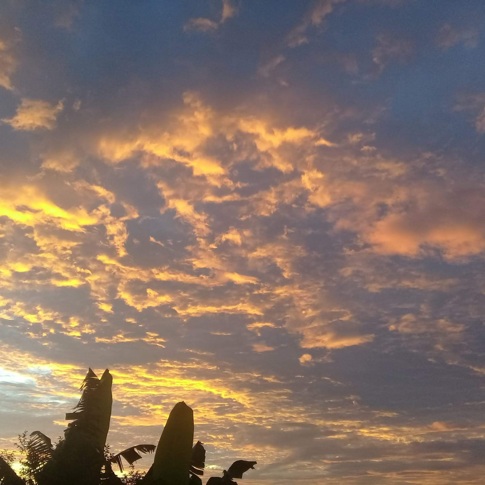

Quando silenciei as distrações do mundo moderno, entendi algumas coisas que antes estavam enevoadas na minha mente. Olhar o mundo pela tela pequena na palma das mãos é a distração que lentamente se torna a angústia da irrealidade. A armadilha que sufoca sua humanidade e te mantém fixo alí, como uma árvore sempre no mesmo lugar.
Ficamos tanto tempo perdidos ,presos na nova engenharia que esquecemos quem éramos e de onde viemos… Esquecemos de contemplar o idílico cotidiano. Mas nesse instante, olhando pela janela , tão pequena em comparação com o alcance da tela… eu vejo a vastidão desse imenso céu. Do meu próprio céu . As nuvens mudam o cenário a cada instante . As folhas dançam lentamente ao ritmo do vento, e ressoam a mais bela e calma sinfonia. O vento atravessa a janela elegantemente e balança a cortina, que brilha sob a doçura dos raios de sol . O peito se preenche com a gratidão de lembrar da vastidão que é contemplar o seu próprio céu, sentir o vento, o calor do sol e o privilégio de ver a passagem do tempo.
Admirando esse imenso céu eu chego a olhar pra dentro de mim.
Tenho para mim que à algumas pessoas, assim como eu, espalhadas por aí,deslocadas desse mundo moderno.
É como se eu estivesse andando em uma pista que muda o tempo todo de direção,eu tropeço assusto com um quase-tombo, e sem um minuto de respiro caio de vez … ainda caída olho para cima e penso como fui parar ali, nocauteada por todas as minhas inadequações a este mundo novo.
Outra rasteira desleal dos avanços humanos que tiram a humanidade de nós.
Eu tenho essa peculiaridade intrínseca a mim.Eu fui feita para contemplar o devagar do tempo, silenciosamente apreciar o bucólico cotidiano, O que antes era comum e simples hoje é utopia.
Nesses tempos metálicos não há novidades para se contar, tudo está em exibição pelas redes. As métricas de carinho já não são um encontro, uma carta,um abraço e memórias compartilhadas. São os likes,reações … é possível se sentir amado ou odiado por um simples botão.
Estar conectado a centenas de pessoas, que talvez nem reconheça nas ruas, mas desconectado totalmente de quem te olha nos olhos. Dividem a mesa, mas a atenção é exclusivamente para a tela. Reparo no semblante apagado pela indiferença e desinteresse,dou de ombros, já não me ofendo mais .
Essa indiferença generalizada se alastrou e cada vez nos distanciamos mais e mais do que éramos, humanos.
Lentamente acinzentou o mundo ao nosso redor.Tudo se tornou tão simplório e inexpressivo. Iguais...sempre tão iguais.
Queria eu ter um passaporte para viajar em uma máquina do tempo e fugir para onde não corro o risco de me tornar obsoleta por qualquer linha de código ,onde o presente ainda não se tornou uma distopia real, onde não preciso investigar se é realidade ou um resultado artificial . Um mundo criado por poucos humanos para ser cada vez menos humano.
PS: Esse link é compartilhado para apenas algumas pessoas(bem poucas na verdade) :) 🧠
Dá uma olhada na letra dessa musica, fala exatamente sobre isso